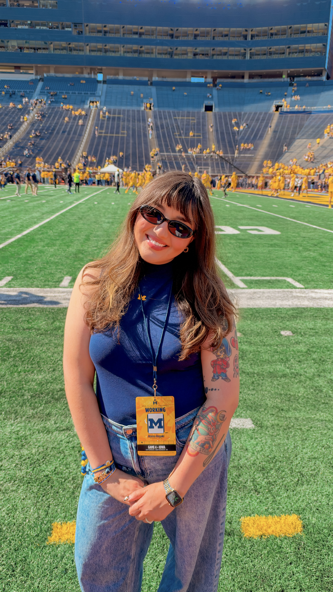

Alaina Rogacki
I’m interested in what sport tells us about people, institutions, and belonging.
Who feels welcome in sport—and who is left out?
How do gender, identity, and culture shape athletic experiences?
What can institutions do to better support student-athletes?
01 About
A few different paths, one shared interest in people.
I did not take the most direct route to studying sport, but I think that has shaped the kind of scholar I hope to become.
I started my career as a high school English and yearbook teacher in Detroit. Since then, I have worked in financial services, spent several years as a software engineer, and mentored people navigating new careers. Those experiences may not look especially connected on a résumé, but each taught me something about education, opportunity, and the ways organizations shape our lives.
Today, I am completing my M.S. in Sport Administration at the University of Cincinnati while interning with the Academic Success Program at Michigan Athletics. Working with student-athletes has made me even more interested in the relationship between individual experiences and the institutions responsible for supporting them.
My academic interests are rooted in the sociology of sport, particularly questions of gender, equity, identity, and belonging. I am also interested in student-athlete development and the role of institutional culture in shaping educational and athletic experiences. More broadly, I want to understand how sport reflects—and sometimes reinforces—the social dynamics we see outside it.
I have always loved learning, asking questions, and finding connections between seemingly unrelated ideas. Pursuing a PhD feels like a natural extension of that curiosity, and I hope to build a career that brings research, teaching, and mentorship together.
Academic interests
02 Teaching & mentoring
Learning, teaching, and mentoring across different contexts.
The part of teaching I have always valued most is getting to know students as people. That has stayed with me in every role I have held, even when my job title had nothing to do with education.
-
2026 to present
Academic Success Program Intern, Michigan Athletics
I support student-athletes through academic check-ins, scheduling and registration, tutoring and mentoring coordination, and eligibility-related academic processes. This work has given me a closer look at the support structures surrounding Division I student-athletes and the demands they navigate.
-
2022 to 2023
Education mentor, Thinkful
I met regularly with adults transitioning into software engineering, helping them build technical skills, confidence, and a plan for entering a new field.
-
2018 to 2024
Engineering mentorship, ActiveCampaign and Rocket Mortgage
Alongside engineering work, I mentored teammates, supported onboarding, shared technical knowledge, and helped colleagues grow in their careers. I learned how much I enjoy making complicated things easier for other people to understand.
-
2014 to 2015
High School English & Yearbook Teacher, Detroit
I taught high school English and yearbook in Detroit, with a focus on writing, college readiness, and helping students prepare for life after graduation. The experience continues to shape how I think about educational access and individual support.
03 Research & writing
The questions I am exploring and the work that has helped shape them.
-
Research experience
NCAA sport gambling: perspectives and safeguards
In 2026, I contributed to a research project examining perspectives on gambling within college athletics. I reviewed and coded open-ended survey responses from NCAA Division I, II, and III personnel, identifying recurring themes and contributing to recommendations about safeguards and resources.
-
Academic focus
Gender, identity, and belonging in sport
I am interested in how expectations surrounding gender and identity shape people’s experiences in athletic spaces, whose experiences are centered, and what belonging looks like across different sport settings.
-
Academic focus
Student-athlete experiences and institutional support
My work in academic support has sparked questions about how universities structure resources for student-athletes, and how those decisions influence academic success, development, and everyday experiences.
-
Additional interests
Sport, culture, religion, and social power
I am curious about how wider cultural beliefs and institutions show up in sport, including questions about religion, nationalism, masculinity, and organizational culture.
My research interests are developing as I prepare for doctoral study. I welcome conversations about shared interests and potential collaborations.
04 Curriculum vitae
Education and experience.
Education
Expected Dec 2026
MS, Sport Administration
University of Cincinnati
Graduate coursework includes the sociology of sport, sport governance, facility management, and student-athlete development. Current GPA: 4.0.
2014
BS, Middle Childhood Education
University of Cincinnati
Language arts and social studies. Collegiate rower.
Research experience
2026
Research Coding Contributor · NCAA Gambling Study
Faculty-led research project
Thematic coding of open-ended responses from NCAA personnel across divisions and contributions to recommendations for education and safeguards.
Sport & athletics
2026 to present
Intern, Academic Success Program
University of Michigan Athletics
Academic support for Division I student athletes.
2019 to 2020
Guest Relations
Little Caesars Arena, Detroit
Event day operations and fan experience at a major sport and entertainment venue.
Teaching
2022 to 2023
Education Mentor
Thinkful
One on one technical and career mentorship for adult career changers. One hundred percent placement.
2014 to 2015
English Language Teacher
American Promise Schools, Detroit
College writing and journalism. Twelfth grade lead teacher managing four teachers and eighty students.
2013 to 2015
Corps Member
Teach For America, Greater Detroit
Selected from a national applicant pool of roughly fifty thousand for placement in an urban school setting.
Industry
2020 to 2024
Software Engineer III
ActiveCampaign
Lead engineer on the Customer Centric Engineering team. Mentored five engineers, led ten company wide presentations, conducted twenty five interviews, and cut a data population process from seventy two hours to instantaneous.
2018 to 2020
Software Engineer
Rocket Mortgage
Release pipeline platform across on premise, Kubernetes, and AWS. Mentored three developers and helped redesign an internal technical bootcamp.
2015 to 2018
Executive Client Care Specialist
Quicken Loans
Closed more than fifteen hundred loans at a ninety five percent satisfaction rate. Helped build the first fully online VA mortgage process.
An expanded academic CV is available upon request.
05 Contact
I would love to connect.
I would welcome the chance to connect with faculty, graduate students, and others interested in the sociology of sport, student-athlete experiences, or higher education. Please feel free to reach out.